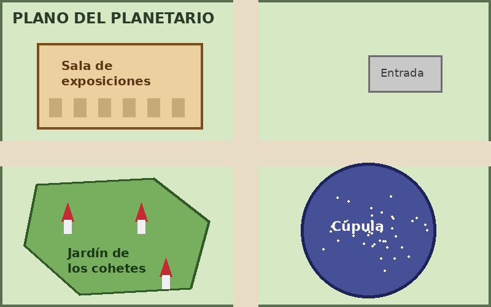

Bienvenido al planetario. Haz clic en las distintas zonas del plano para ver información sobre cada una de ellas: la sala de exposiciones, la cúpula de proyecciones y el jardín de los cohetes.

En la sala de exposiciones encontrarás meteoritos reales, maquetas de satélites y paneles sobre la historia de la exploración espacial. Abierta todos los días de 10:00 a 19:00.
Bajo la cúpula se proyecta el cielo nocturno sobre una pantalla de 360 grados. Las sesiones duran 45 minutos y empiezan cada hora en punto.
Un espacio al aire libre con réplicas a escala de cohetes famosos. Es ideal para hacer fotos y para que los más pequeños descubran cómo funcionan los motores de un cohete.